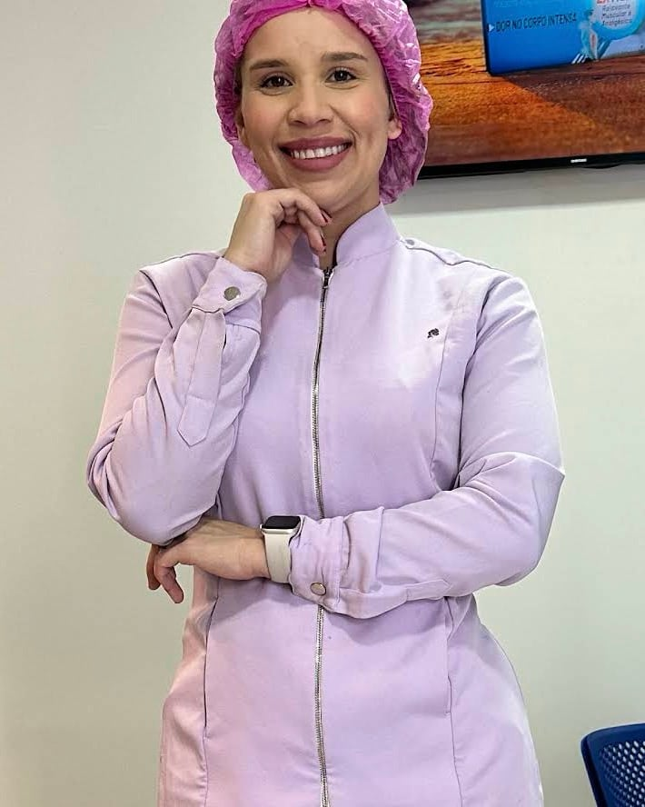
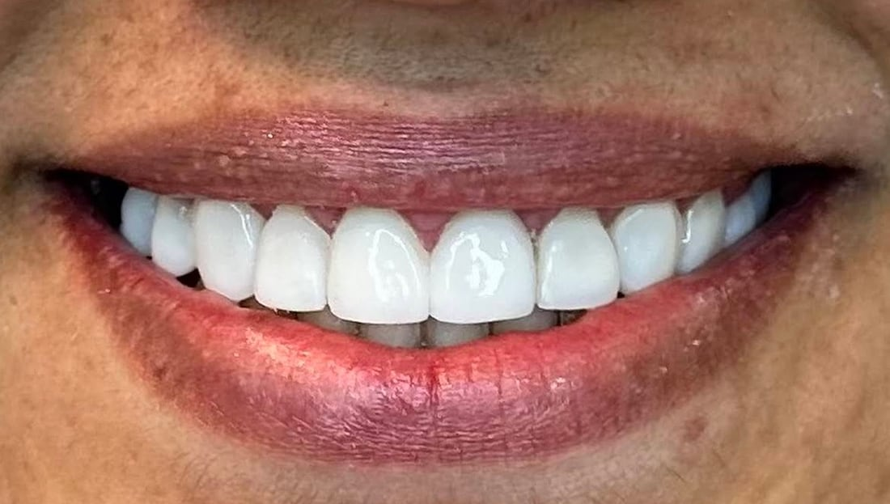
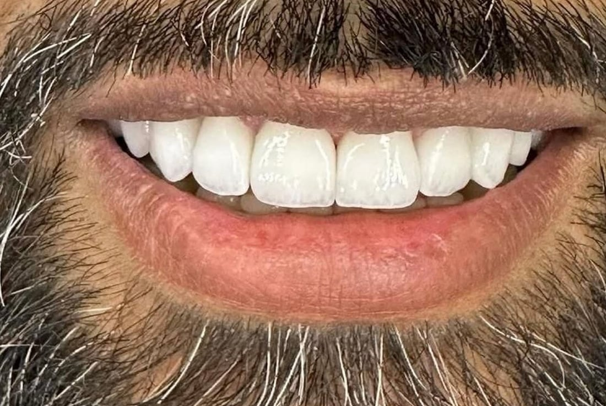

Cuiabá · MT — Bairro Lixeira
Odontologia atenciosa e completa para cuidar do seu sorriso em Cuiabá
Do check-up de rotina à urgência que não pode esperar: atendimento próximo, explicado com clareza e conduzido no seu ritmo, por Dra. Paula Viana.
-
4,9
60 avaliações
no Google -
Particular
e convênios Consulte as
condições -
Urgência
Dor de dente?
Fale agora

Encaixes conforme disponibilidade da agenda
Lixeira — Cuiabá/MT
Nossos serviços
Tratamentos para cada fase do seu cuidado
Prevenção, reabilitação e estética em um só lugar — com plano de tratamento explicado passo a passo antes de qualquer procedimento.
-
Odontologia geral
Consultas, restaurações e acompanhamento preventivo para manter a saúde bucal em dia e evitar tratamentos maiores lá na frente.
-
Urgência odontológica
Dor aguda, dente quebrado, restauração que soltou ou inchaço: atendimento de alívio rápido, com encaixe conforme a disponibilidade da agenda.
-
Implante dentário
Reposição de dentes ausentes com planejamento individualizado, devolvendo função para mastigar e falar com segurança.
-
Invisalign / alinhadores
Alinhadores transparentes e removíveis para quem quer corrigir o sorriso de forma discreta, sem abrir mão da rotina.
-
Ortodontia
Aparelhos fixos e acompanhamento periódico para alinhar os dentes e corrigir a mordida, com ajustes no seu tempo.
-
Limpeza dental
Profilaxia e remoção de tártaro e placa, com orientação de higiene personalizada para o seu dia a dia.
-
Extração de siso
Avaliação e cirurgia do dente do siso com cuidado no pós-operatório e orientações claras para a recuperação.
-
Não encontrou
o que procura?Conte o que está sentindo pelo WhatsApp e a equipe orienta o melhor caminho.
Falar no WhatsApp
Sorrisos
Trabalhos realizados no consultório
Registros de pacientes atendidos por Dra. Paula Viana, publicados com autorização.


Cada caso é único: o resultado depende da condição clínica, da indicação do tratamento e dos cuidados de cada paciente. A avaliação presencial define o que é possível no seu caso.
Sobre a Dra. Paula Viana
Um atendimento que começa ouvindo você
Dra. Paula Viana é cirurgiã-dentista e atende em consultório próprio no bairro Lixeira, em Cuiabá. Seu trabalho é reconhecido pelos pacientes por uma característica simples e rara: tempo. Tempo para entender a queixa, explicar o que está acontecendo e construir um plano de tratamento que faça sentido para a rotina e para o orçamento de cada pessoa.
O acompanhamento não termina quando o paciente sai da cadeira. Orientações de pós-operatório, retornos e canal direto pelo WhatsApp fazem parte do cuidado — especialmente para quem chega com dor ou com medo de dentista.
-
Plano de tratamento transparenteVocê entende cada etapa e cada custo antes de começar.
-
Consultório próprio em CuiabáSempre a mesma profissional acompanhando o seu caso.
-
Acolhimento para quem tem medoRitmo respeitado, sem pressa e sem julgamento.
Por que escolher
Cuidado de verdade está nos detalhes
O que os pacientes mais comentam sobre a experiência no consultório.
-
Atendimento personalizado
Nada de protocolo genérico. Cada plano leva em conta o histórico, a rotina e as prioridades do paciente — inclusive quando o tratamento precisa ser feito por etapas.
-
Ambiente confortável
Espaço acolhedor e tranquilo, pensado para reduzir a ansiedade antes mesmo da consulta começar.
-
Biossegurança rigorosa
Protocolos de esterilização e higiene seguidos à risca em todos os atendimentos, do instrumental ao ambiente.
-
Agenda organizada, espera curta
Horários marcados com intervalo real entre os atendimentos, para que ninguém fique esperando na recepção — e com retorno rápido às mensagens no WhatsApp.
-
Foco no paciente, do primeiro contato ao retorno
Dúvida sobre um sintoma, um orçamento ou o pós-operatório? Você fala direto com o consultório, sem intermediários e sem burocracia.
Depoimentos reais
O que os pacientes contam
Avaliações públicas publicadas por pacientes no perfil do Google — média de 4,9 em 60 avaliações.
-
“A Dra. Paula é extremamente humana e profissional. Conduziu com maestria a resolução de um problema do meu pai que já se arrastava há mais de um ano.”
-
“Estava com muita dor e encontrei a Dra. Paula aqui no Google, ela rapidamente me socorreu, realizou a cirurgia de extração de siso, a cirurgia foi super tranquila e ela deu todo suporte no pós-operatório.”
-
“Ótima profissional, atenciosa, dedicada, uma das melhores dentistas que já fui, não troco por nada!”
Dê o primeiro passo
O melhor momento para cuidar do seu sorriso é agora
Uma avaliação já esclarece o que precisa ser feito, em quanto tempo e a que custo. Sem compromisso e sem enrolação.